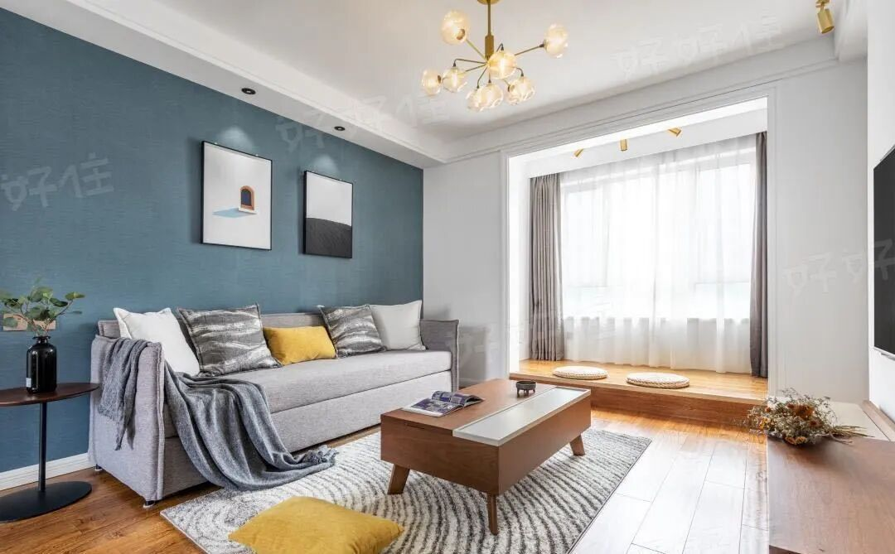
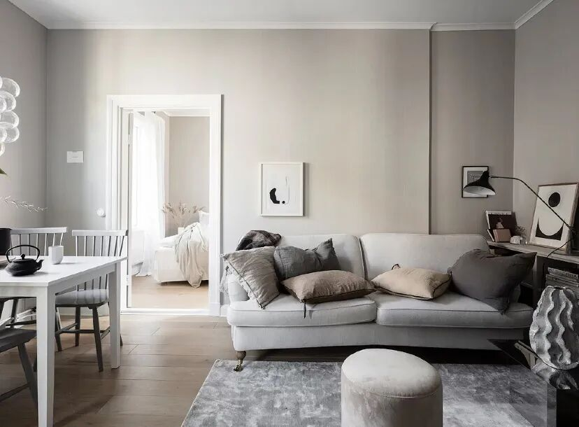
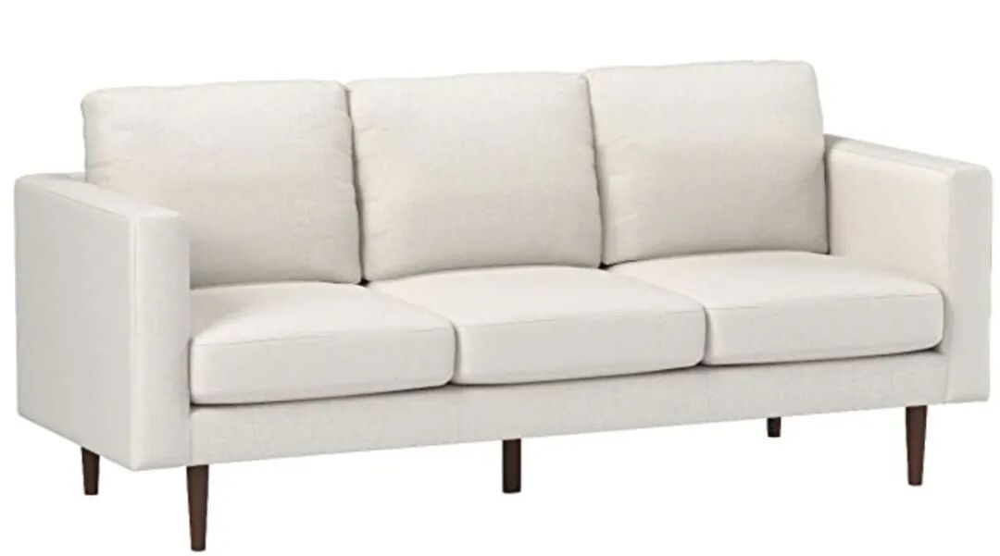
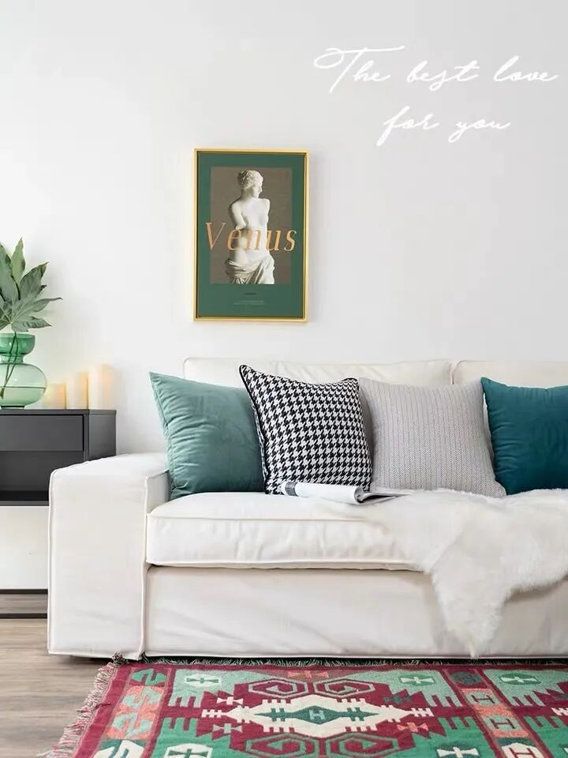
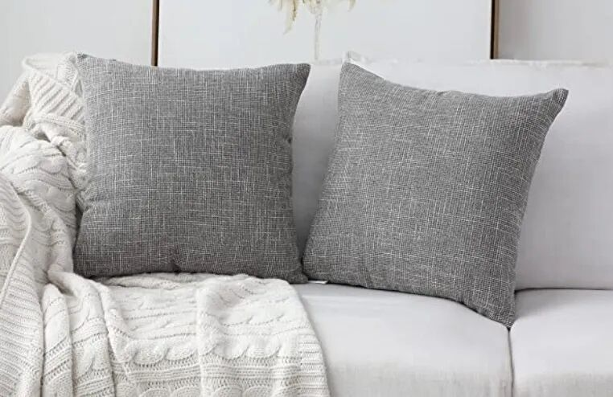
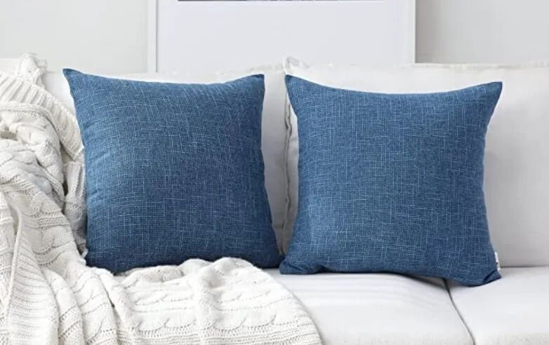
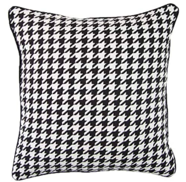
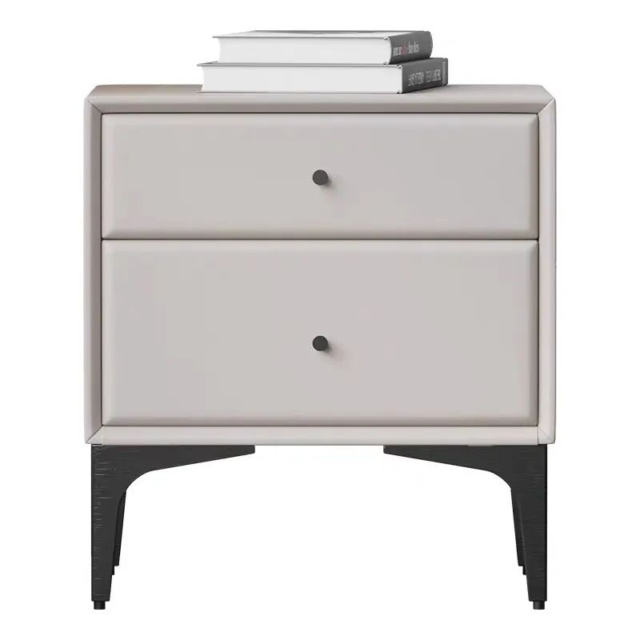
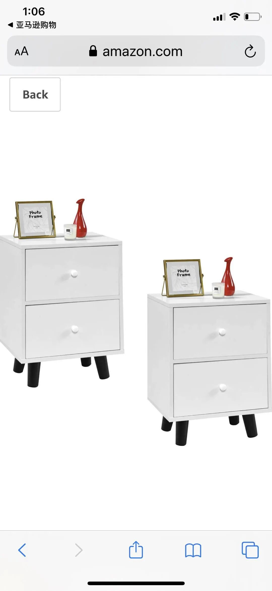
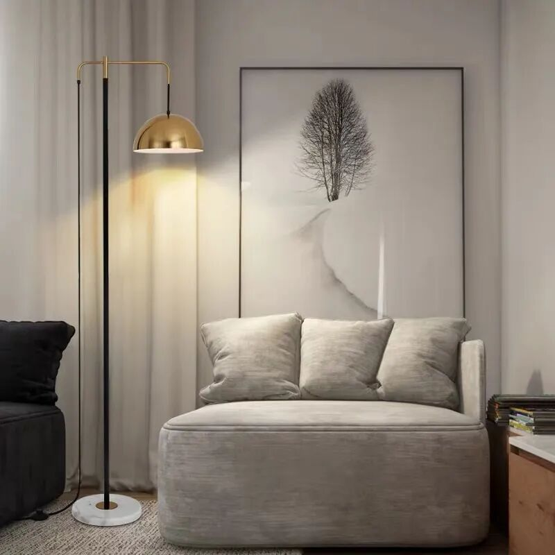

--------点击蓝字关注我--------
微信号：gaoxiaomao88
--------点击蓝字关注我--------
微信号：gaoxiaomao88
怎么突然想做软装改造的
最近刚刚搬了新的住的地方，于是有机会对于家里的各类陈设做一个比较大的调整。新的地方比之前的客厅变大了，书房变小了，因此有一些之前的家具没有合适的位置摆放了，又有一些客厅里多出来的空间有些显得空荡荡的，因此我花了不少的心思考虑要怎么改动。
恰好最近在上北美地产学堂的flipping的课有涉及到staging的内容。所谓的staging，指的是在卖房的时候的一些软装陈设，包括各类家具，小的摆件，挂画等等。往往这些东西一摆，可以让整个房间焕然一新，来买房子的人也会更加喜欢这个房子，从而可以把房子卖得更加好一点。
找了谁帮忙
不过北美地产学堂涉及到的staging内容不是特别多，所以我就在微信和知乎上找了不少相关的资料。其中有一篇住范儿的文章我个人觉得写得蛮好的，总结了一些大的配色套路，比如Instagram纯白风，极简风，原木风等等。
文章链接：https://zhuanlan.zhihu.com/p/31450892
看完这篇文章以后，虽然对于颜色有点概念了，但是总还是觉得单单把颜色搭配对了还是有点不够。而且我们本来有一些比较喜欢的家具跟这些套路有点冲突，因此不太能简单的照搬。
住范儿他们是有设计师的，我于是想着找他们的设计师帮我付费设计一下，教我怎么搭配家具，配件等等，不过他们似乎生意比较忙，表示异地的咨询他们不做的。。。我于是只好作罢。不过万能的淘宝总会给我们开辟新的可能性。在淘宝上搜索了一下，我就找到了一家淘宝店，提供软装咨询的业务， 如果感兴趣可以私聊问我，这里就不贴出来了。
具体流程
帮我们设计的是一位很nice的小姐姐。在了解完房间的大致状况以后，她就从房间的整体效果开始，慢慢细致到每个房间的风格，大件的家具，小件的摆设，地毯，挂画，盆栽，一件件帮我们挑选。
整个咨询过程大概持续了4个多小时。以客厅为例，她会先跟我们讨论房间的整体效果大概是怎么样的。整体效果定下来以后，我们就会开始讨论一些大件的家具。比如说我们觉得这样的整体效果下要用一个白色的沙发，她就会推荐一些沙发的样式，由于她推荐的东西大部分都来自淘宝，美国并没有一模一样的，所以我就会在美国的网站上找寻类似的东西，得到她的首肯以后，再以此为基础寻找下一件大件，直到全部完成。

一开始找的效果图

后来找的效果图

根据效果图找的amazon上的沙发

抱枕效果图



根据效果图找的Amazon抱枕
对于一些线上家具店的点评
在这个过程中，由于要大量地根据她提供的样式寻找类似的样式，所以以图搜图绝对是少不了的。
淘宝上这个功能做得真的超厉害，基本上类似的东西80%以上的情况都可以找到。相比起来，美国的电商巨头亚马逊就差得有点远，它的网站上根本没有以图搜图的功能。Google倒是有image search的功能，但是往往搜出来商品差得非常远，大概只有30%能找到类似的东西。
我个人觉得这个应该不是image similarity的区别，可能是淘宝针对电商这个场景对于模型做了大量的微调，而Google并没有下这方面的功夫。(毕竟Google的技术肯定是厉害的)。
作为淘宝的海外版AliExpress，他们的以图搜图功能基本照抄了手机淘宝的功能。不过目前他们还没有上线以图搜图+关键字筛选的功能，不过已经非常好用了。由于很多淘宝的卖家会把他们的类似商品也挂到AliExpress上，因此小姐姐好几件推荐的家具我都在上面找到了（不过价格基本是2-3倍，可能是运费比较贵吧）。
亚马逊虽然没有以图搜图的功能，我50%以上的家具却基本都是它上面买的。一是因为它基本上可以保证比大部分的其它家便宜，比如Wayfair，OverStock, West Elm, Pottery Barn等。当然其它很多家具的质量可能要比Amazon上面好，不过因为我只是看样式像不像，所以亚马逊还是占了绝对的优势的（而且他们上面的Inventory和其它几家加起来差不多，更加容易找到我想要的样式）。

小姐姐找的例子

Amazon上找的替代
我买的第二多的是AliExpress，尤其是一些漂亮的灯具，要比亚马逊上面一模一样的货品便宜20%-40%，可能是因为亚马逊收商家20%的手续费？

比较漂亮的灯
还有一些小件啊画啊什么的，我可能会在Etsy以及Overstock上面买。Etsy上面要买一些比较有设计的东西还是比较便宜的，当然如果比较小件的话也可以淘宝上买了运过来，更加便宜。
之前我一直觉得宜家的东西很多，尤其是去他们线下店逛的时候，不过一旦真的比较起来，就发现宜家的品类真的少得可怜，价格倒是基本和亚马逊持平，所以这方面还是比起别的家具店有优势的。Wayfair这么看起来真的会有点不行，难怪最近裁员了。
总结
由于大部分家具现在才刚刚下单，估计还要2-4周才能寄到，所以这篇文章就没法贴效果图了。等以后全部安排好了，然后有兴致了再写吧。大家如果感兴趣的话，也可以试着找个室内设计师帮着设计一下家里的陈设，说不定可以让家里焕然一新哦。